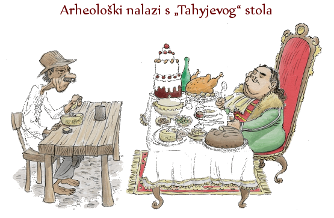

Plemstvo je u feudalnom društvu društveno - staleška kategorija, koja se u gospodarskom smislu temelji na posjedovanju zemlje i radne snage na njoj, a u političkom životu plemstvo sudjeluje u diobi javne vlasti, a uz to ima ulogu profesionalne vojske. Ili, jednostavnije rečeno - plemići su oni koji imaju posjed na kojem drugi rade, a imaju i određena zakonska prava koja ih razlikuju od ostalih ljudi.
Na početku 16. stoljeća u Kraljevini Slavoniji bilo je između 850 i 950 feudalnih posjednika, na čijim je posjedima bilo 25 do 30 000 kmetskih obitelji. Među njima, 5 - 6% velikaša (magnates) držalo je oko 75% poreznih dimova. Među velikaše ubrajamo nasljedne knezove (grofove), barune i crkvene velikodostojanstvenike.
Najbrojnija skupina feudalnih posjednika kod nas je srednje i niže plemstvo. Oni su činili oko 95% posjednika, ali im je pripadalo samo nešto više od 25% feudalnog zemljišnog posjeda – poreznih dimova. Ova je skupina imala važnu ulogu u političkom i društvenom životu. Njezin se udio u feudalnom zemljišnom fondu počeo povećavati potkraj 16. stoljeća, kada su se na mnogim starim plemićkim posjedima počele stvarati kurije sa zasebnim posjedima, koje plemići uzimaju u zalog od vlastelina za određene poslove i zasluge.
